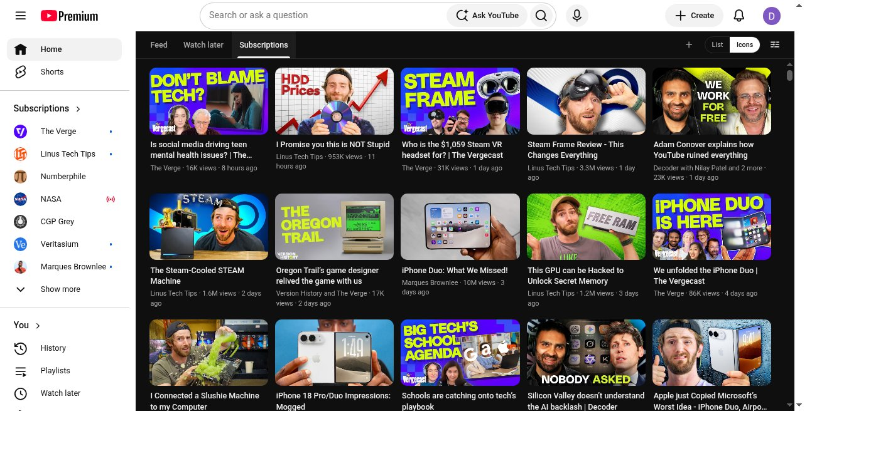
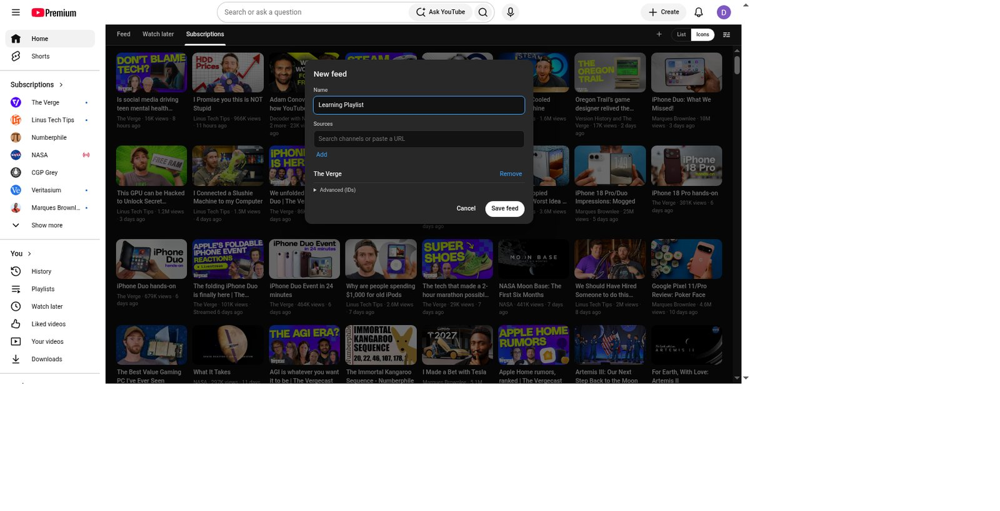
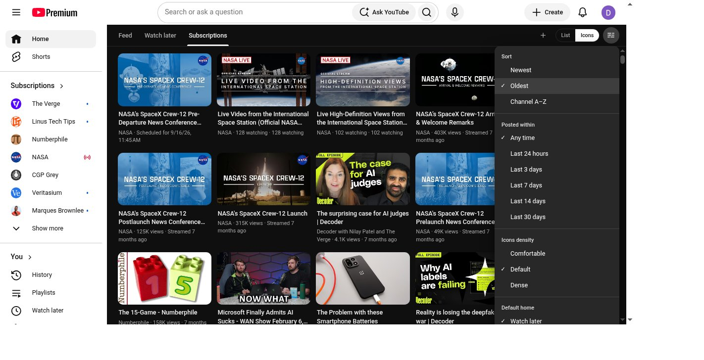

Chrome extension · digital diet
Diet-Youtube
Replace YouTube’s impulse Home with a queue-first reading surface. Watch later first. The algorithm stays one click away.
Watch later home
Custom feeds
No backend
Watch
How it looks



How to install (no coding)
You do not need to clone this repo or know how to code. Download one zip, unzip it, then point Chrome at that folder.
- Click Download the release zip — the browser starts diet-youtube-v1.2.0.zip immediately. Do not use “Source code (zip)”. Optional: release notes.
- Typical location:
/Users/YOURNAME/Downloads/diet-youtube-v1.2.0.zipon a Mac, orC:\Users\YOURNAME\Downloads\diet-youtube-v1.2.0.zipon Windows. - Unzip it (Mac: double-click; Windows: right-click → Extract All). You get a folder
diet-youtube-v1.2.0next to the zip. - Open that folder and confirm you see
manifest.jsoninside it. That folder is what Chrome needs — not the.zipfile. If you see a nested double folder, use the inner one that containsmanifest.json. - Open Google Chrome. In the address bar type
chrome://extensionsand press Enter. - Turn on Developer mode (top right).
- Click Load unpacked (top left).
- Select the
diet-youtube-v1.2.0folder in Downloads, then Open. - Go to youtube.com while signed in. You should land on Watch later inside Diet-Youtube.
Need a break? Pin the Diet-Youtube toolbar icon and turn it Off — no uninstall needed. Longer steps and a troubleshooting table: README install guide.
How to uninstall / remove
- Open
chrome://extensions. - Find Diet-Youtube.
- Click Remove, then confirm.
YouTube goes back to normal. You can delete the diet-youtube-v1.2.0 folder and zip from Downloads afterward.
What you get
- Queue-first home: Watch later (or your default playlist).
- Feed only after an explicit tab click.
- New feeds (＋) — name one and add channels or playlists.
- YouTube-style ⋮ to save to Watch later / playlists.
- Icons + List; Comfortable / Default / Dense.
- Toolbar On/Off switch.
- Runs only in your browser — no Diet-Youtube backend.